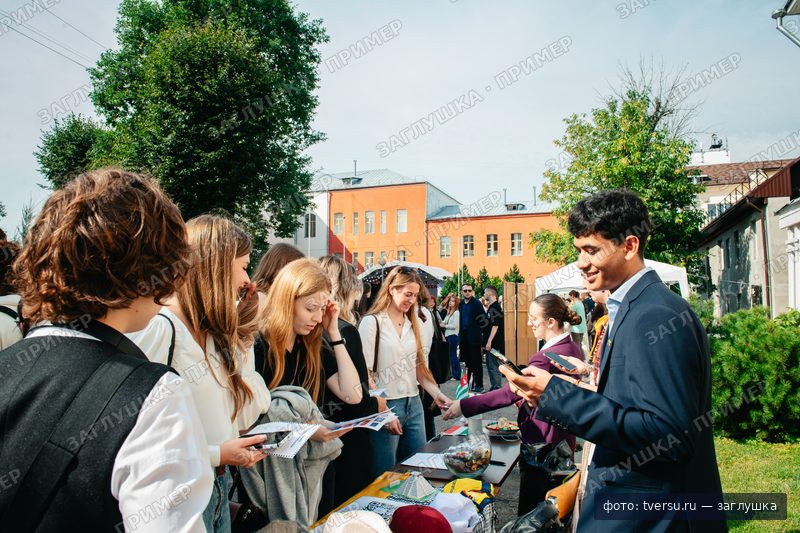
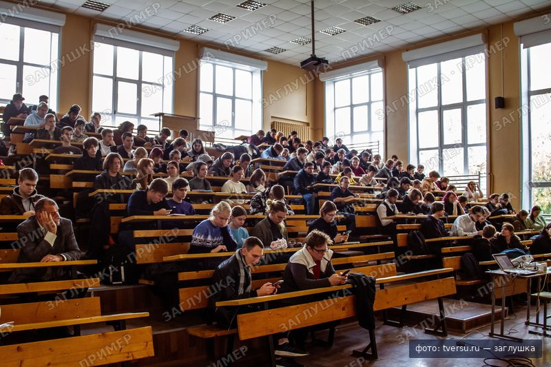
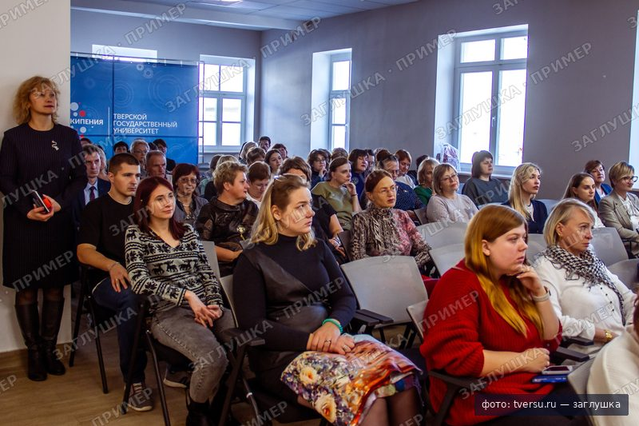

Кит языка Ники · вариант a: PT Serif, полосы 128 px
Классический университет Твери с 1870 года
15 факультетов и институтов, 129 программ. Выбери свою и подай документы онлайн.
Миссия
.section--grey .band .band__aside .band-label .band__body .n-statement
Учить так, чтобы выпускник мог остаться в Твери и строить здесь город, или уехать и везде быть сильным специалистом. Мы делаем это 156 лет и открываем 129 программ для тех, кто начинает сейчас.
Типографика
h1–h2 в main — антиква из --nika-serif, остальное — Golos Text. Курсив антиквы — одна фраза в hero.
- h1 · антиква Regular · 36 → 72 / 1.15
Поступай туда, где учатся с 1870 года
- h2 · антиква Regular · 28 → 44 / 1.15
Проходные баллы и бюджетные места
- курсив антиквы · одна фраза
Жёлтый щит и красная крыша
- h3 · Golos Text 500 · 20 → 24 / 1.3
Общежитие для иногородних студентов
- lead · Golos Text 400 · 18 → 21 / 1.55
Бюджетные места есть на [N] программах. Посчитай свои баллы и узнай, куда проходишь.
- текст · 16 → 18 / 1.6 · колонка до 720 px
Заявление подаётся через Госуслуги или лично в приёмной комиссии на Желябова, 33. Оригинал аттестата приносить не нужно: достаточно согласия на зачисление до [дата].
- лейбл полосы · капс 13 · разрядка 0.08em
Действующие партнёры
- подпись · 13 / 1.45
Фото: tversu.ru, заглушка. Главный корпус, ул. Желябова, 33.
Проекты с партнёрами
.tabs .tab .n-cards .n-card .n-card__mark .n-card__logo .n-card__title .n-card__arrow; наведение для скриншота — .is-hover
Действующие партнёры
.partners.ribbon[data-ribbon] .n-band-head .ribbon__nav .btn-circle .ribbon__track .partner .partner__logo
Вопросы абитуриента
.accordion на <details class="accordion__item">, .accordion__summary, .accordion__body. Раскрыть первый: ?state=accordion-open
Сколько бюджетных мест в 2026 году?
[N бюджетных мест] по всем программам. Цифры по каждому направлению публикуются в правилах приёма до [дата].
Дают ли общежитие первокурсникам?
Иногородним студентам очной формы: [N мест] в [N] общежитиях, стоимость [N ₽ в месяц]. Заявление на заселение подаётся вместе с согласием на зачисление.
Можно ли подать документы через Госуслуги?
Да. Заявление, согласие на зачисление и отзыв документов доступны через Госуслуги.
Сколько стоит платное обучение?
От [N ₽ в год] в зависимости от программы. Есть скидки для [условия].
Обращение ректора
Руководство[ФИО ректора]
Ректор Тверского государственного университета
[Текст обращения ректора к абитуриентам: два-три предложения о том, почему стоит выбрать ТвГУ.]
.section--slate .n-person .n-person__photo .n-mono .n-person__name .n-person__role
Люди университета
Фото ч/б: .n-mono на img из assets/stub или на .stub; приглушённое — .n-muted. Круглых аватаров нет.
Василий Комин
Первый ректор университета
[ФИО профессора]
Профессор кафедры [название], [факультет]
[Имя Фамилия]
Студентка [N] курса, [направление]. Фото приглушено:
.n-muted
-

[1 сентября]
Первокурсники ТвГУ получили студенческие билеты у главного корпуса
[Анонс новости в две строки: что произошло и зачем читать дальше.]
-

[дата]
[Заголовок новости о науке: открытие лаборатории или грант]
[Анонс новости в две строки.]
-

[дата]
[Заголовок: открытая лекция для школьников]
[Анонс новости в две строки.]
День открытых дверей: [дата], главный корпус, ул. Желябова, 33.
.n-news .n-news__media .n-news__date .n-news__title .n-news__text; фото ч/б — .n-mono
Кнопки и дедлайн
Контур — основная форма. Заливка одна на экран: .btn--primary; красная .btn--accent — одна на страницу. Красный текст — только .n-deadline.
Вопрос приёмной комиссии
.field .field__label .input .select .field__error .check — из base.css, рамки и радиусы из темы
Места и баллы
.n-table-wrap (скролл внутри на мобильном) .n-table .num — только горизонтальные линии
| Направление | Факультет | Бюджет | Платно | Проходной 2025 |
|---|---|---|---|---|
| Прикладная математика и информатика | ПМиК | [N] | [N] | [N] |
| Юриспруденция | Юридический | [N] | [N] | [N] |
| Биология | Биологический | [N] | [N] | [N] |
| Лингвистика | ФИЯиМК | [N] | [N] | [N] |
Документы
.n-docs .n-doc .n-doc__title .n-doc__meta .n-sign .n-doc__action
Уровни образования
С чего начать
Графика 1: .n-orbit .n-orbit__art .n-orbit__intro .n-links. SVG-классы: .l .l-soft .dot .dot-accent .dot-open
Маршрут поступления
Графика 2: .n-route .n-route__step .is-current .n-route__when .n-route__what .n-route__note; число шагов --steps
- [20 июня]Подай заявлениеЧерез Госуслуги или в приёмной комиссии, до пяти направлений
- [до 25 июля]Сдай вступительныеЕГЭ засчитываются автоматически, внутренние испытания по расписанию
- [до 3 августа]Дай согласиеОдно согласие на зачисление на выбранную программу
- [9 августа]Проверь приказСписки зачисленных на сайте и в личном кабинете
Где мы
Графика 3: .n-map + .n-figure__label (--x, --y в % от рисунка); узкая схема — .n-only-narrow, широкая — .n-only-wide